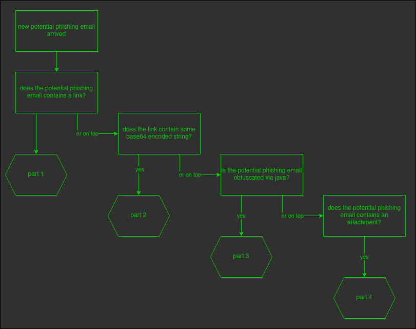

created 2022-12-17
hi and a warm welcome to you.
let me introduce myself using a short story
once upon a time, in a world full of technology and wonder, there was a cyber beaver named seven. seven was unlike any other beaver, for he had a passion for collecting logs and educating other beavers about cyber security response.
seven lived in a beautiful lodge surrounded by cyber space connected with active, blinking pipes that provided him with plenty of logs to collect. he spent his days diligently gathering logs and building his collection, always on the lookout for new and interesting log sources to connect to his stash.
despite his shy nature, seven was passionate about educating others about how to identify and respond to cyber threats. he knew that the cyber space was full of potential dangers, and he wanted to make sure that all of the other beavers were prepared to defend themselves against any threats that might come their way.
seven decided to share his knowledge of cyber security response through a blog and toots on mastodon.
as time went on, the cyber space became a safer and more secure place thanks to seven's dedication and hard work. and even though he was just a simple cyber beaver, he had made a lasting impact on his community, and his legacy lived on long after he was gone. (or not ;-) )
i hope you will find something useful here.
if you have improvements or topics, i would be happy to hear from you.
created 2022-12-27
!!! attention attention !!! --> phishing investigation readme <-- !!! attention attention !!!
please read this carefully!
it can help you to understand potential pitfalls...
first :
--> do not click at the links pointing to the potential phishing site, without modification.
second :
--> do not post any link to online forensic tools, without modification.
third :
--> do not open attachments at your "office" devices. please use a forensic box.
fourth :
--> do not upload attachments to online forensic tools, without verification that the content is not confidential.
i know, should be obvious. if you look at online forensic tools, you will find email addresses exposed.
head
created 2022-12-27
how to investigate a phishing email part 0
how do you get phishing emails into your "soc" inbox
option number one:
--> the user is reporting the potential phishing email manually. please ensure that the potential phishing emails is forwarded as attachment. for investigation purpose it is nice to have the headers.
option number two:
--> some email programs allow plugins/add-ins. you can write your own plugin/add-in, which forwards the potential phishing email as attachment to the soc inbox. (and if you are running a siem, you may also want to have an event triggered, that a potential phishing email is in your soc inbox.)
option number three:
--> you have purchased option number two (just ensure you can reroute the traffic to your soc inbox and are not forced to use an other portal.)
option number four:
--> you are an office365 customer and have the correct license purchased. (do not forget to put the transportation rules in place and point them to the soc inbox. otherwise those will be reported to ms directly.
ok, now you got a potential phishing email in your soc inbox.
let's split the investigation into four parts.

head
created 2022-12-xx
how to investigate a phishing email part 1
work in progress
head
created 2022-12-17
spf
spf, or sender policy framework, is a technique that allows a domain owner to specify which servers are allowed to send email on their behalf. this can help prevent someone from sending an email that appears to be from a domain they don't own.
high-level steps to implement spf, you will need to do the following:
- identify all the servers that are allowed to send email on your domain's behalf. this may include your own mail servers, as well as any third-party servers you use for sending email (such as a marketing platform).
- create a list of these servers, along with their IP addresses, in the form of an SPF record. this record should be added to the dns settings for your domain.
- once the spf record is added, any time someone receives an email from your domain, their mail server will check the spf record to see if the server that sent the email is allowed to send email on your domain's behalf. if the server is not on the list, the email may be marked as spam or rejected.
- you can also specify in the spf record whether you want to allow third-party servers to send email on your domain's behalf, or whether you want to strictly limit it to your own servers. this is known as the "policy" for your spf record.
- it's important to regularly review and update your spf record to make sure it accurately reflects the servers that are allowed to send email on your domain's behalf. this will help ensure that your emails are delivered successfully and are not marked as spam.
head
this is the end and thanks for the fish!
head
created 2022-12-27
disclaimer, things on top of the license
- just to say, i do not receive any money or whatever from any vendor, which product i mention in my articels.
- all process are my own opinion.
head